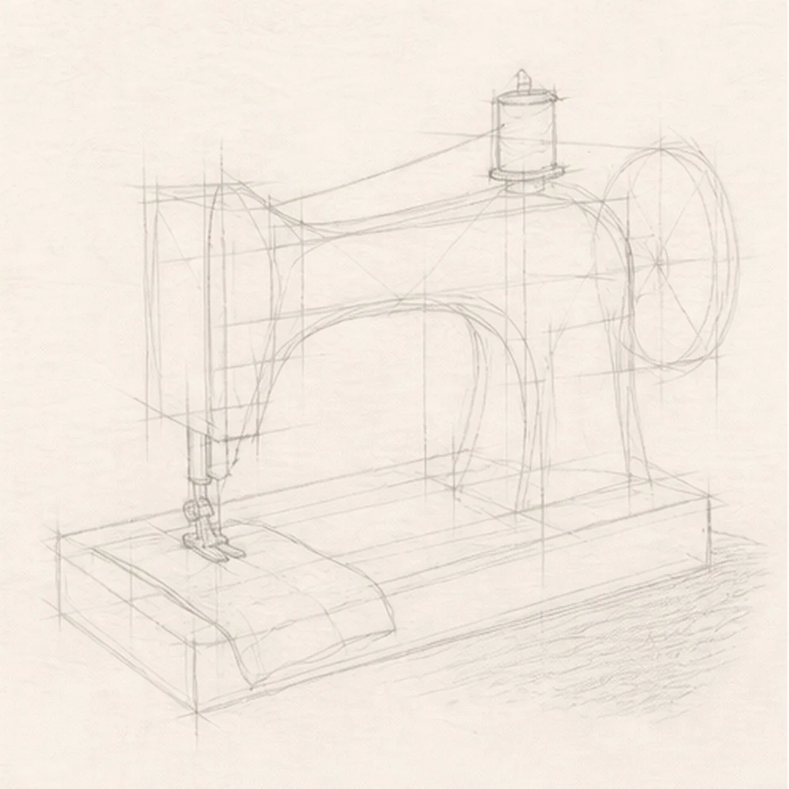
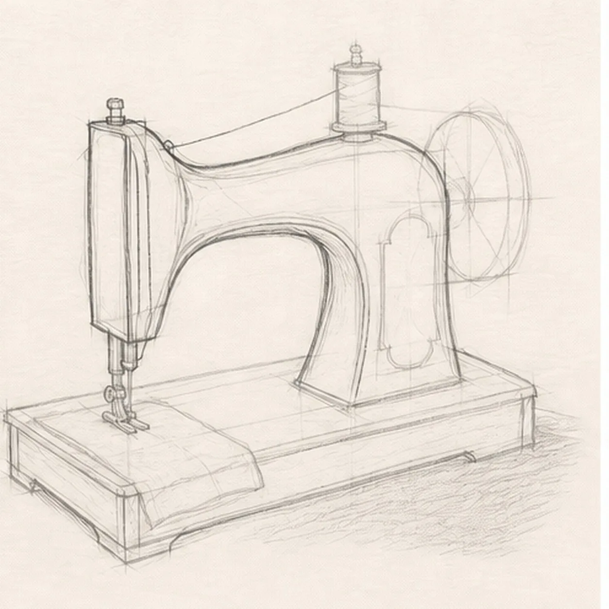
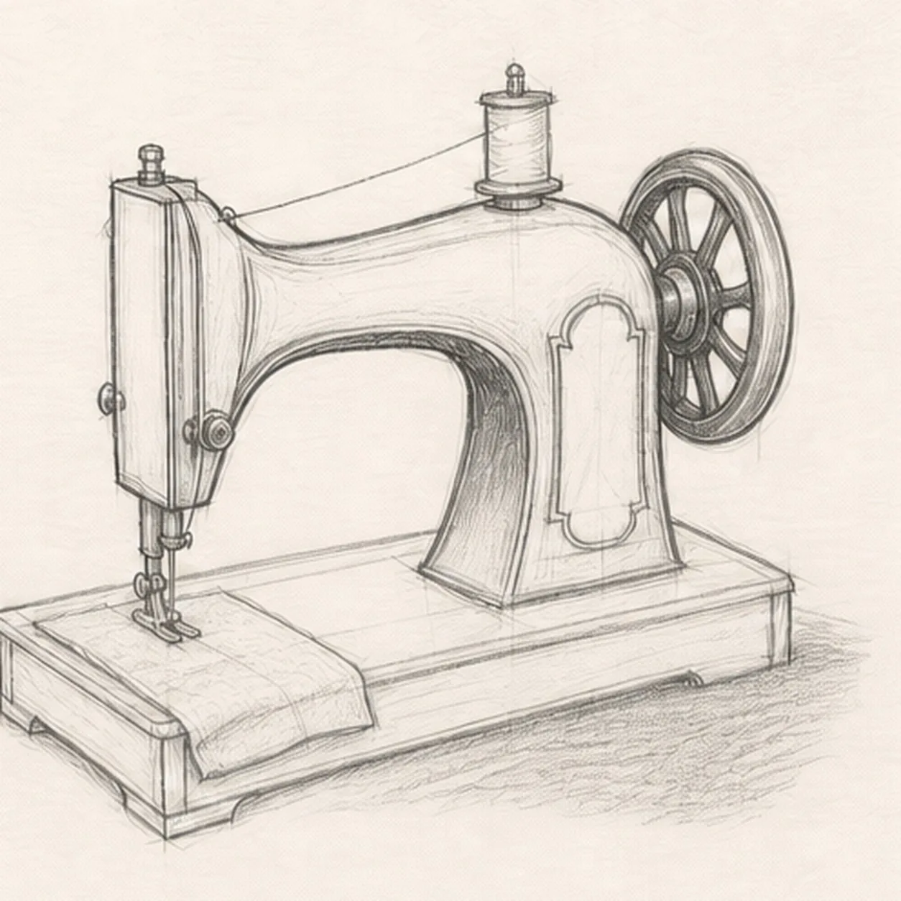
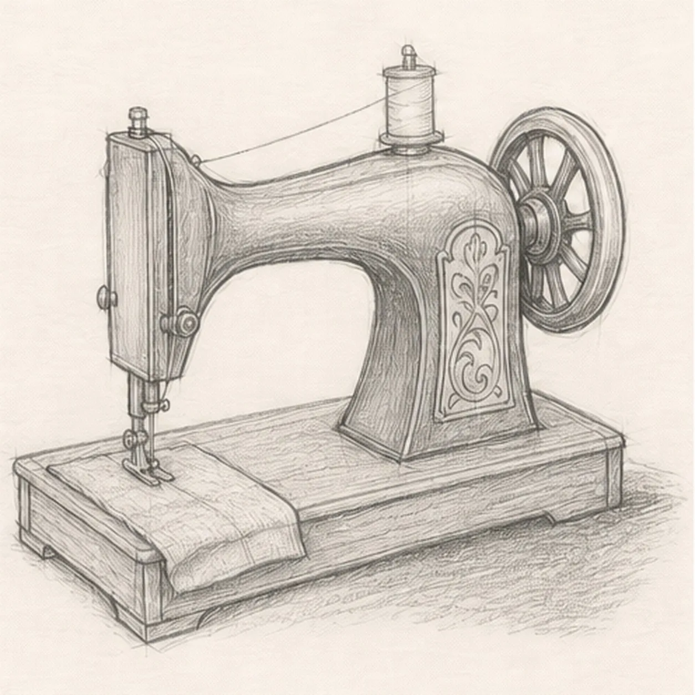
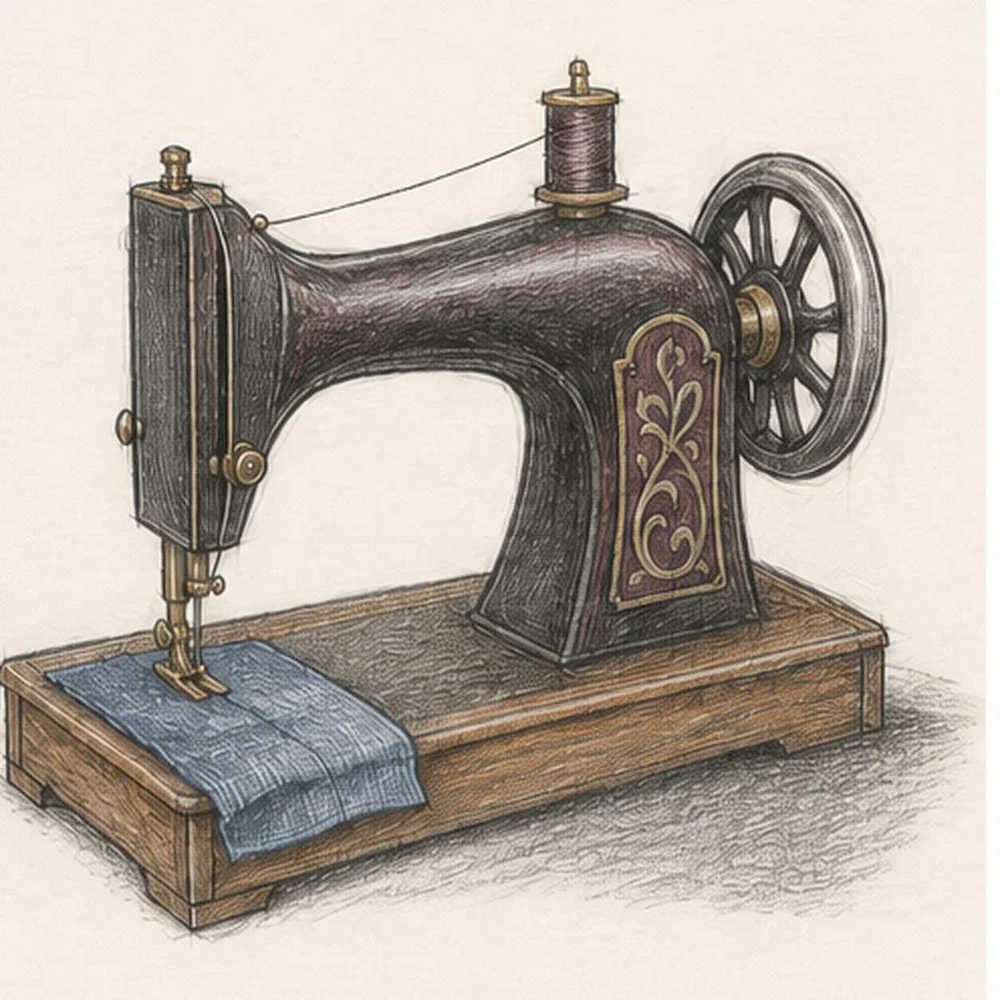

From the archive
Let's draw a vintage sewing machine
Treat this as one small practice round: build the subject lightly, notice the shapes, then darken only the lines that help the finished sketch.
-
01

Block the machine footprint
Use pale boxes and curves to place the wooden platform, arched body, needle column, right handwheel, top spool, thread route, needle, presser foot, folded fabric, ornament panel, and broken shadow.
Sketch tip: Ghost the platform diagonals first and reserve the handwheel and fabric footprints before shaping the machine. Body edges should stop behind the wheel, while platform lines stop beneath the fabric instead of being erased later.
-
02

Shape the iron silhouette
Wrap the guides with the high arched cast-iron body, vertical needle column, visible side thickness, and shallow wooden platform while preserving every mechanical and fabric reservation.
Sketch tip: Compare the open arch beneath the arm with the negative space around the needle column. Keep the broad body slightly asymmetrical so it feels observed and hand drawn rather than mechanically mirrored.
-
03

Connect wheel thread and needle
Clarify one large right handwheel, one top spool, one continuous thread path, the needle and presser foot, and the folded fabric passing under the foot.
Sketch tip: Follow the thread route with your finger from spool to needle and check that the wheel stays behind the body edge. Let the fabric cover only the platform gap you reserved in the first frame.
-
04

Hatch the workshop details
Add a simple wordless ornamental panel, short curved graphite hatching on the metal, wood-grain marks on the base, two modest fabric folds, and the established broken shadow.
Sketch tip: Curve the body hatches around the iron arch and pull the wood grain along the platform planes. Keep the ornament broad and sparse so it suggests an heirloom finish without becoming lettering.
-
05

Layer the heirloom color
Add charcoal and burgundy to the iron, tiny brass accents to established hardware, muted blue to the fabric, and warm brown to the wooden platform while preserving graphite and paper highlights.
Sketch tip: Build two dry pencil layers instead of pressing hard at once. Keep the brightest paper gaps along the metal crown, wheel rim, fabric fold, and upper platform edge so the dark machine remains readable.
-
06

Set the heirloom finish
Strengthen selected keeper contours, deepen the existing graphite values and shadow, balance the established colors, clarify highlights, and soften only pale guides that distract.
Sketch tip: Count one machine, one handwheel, one spool, one thread path, one needle and foot, one fabric piece, and one wooden base. Change the fabric or metal colors if you like, but preserve the same mechanical connections.
![Handmade graphite and restrained colored-pencil sketch of one left-facing muted-ochre seahorse with one horse-like head and long snout, one three-point crown ridge, one visible eye, one arched neck and rounded belly, one tapering clockwise-curled tail wrapped exactly once around one teal-green eelgrass stem, one ribbed dorsal fin, exactly two small side fins, exactly seven curved torso plates, exactly five narrow eelgrass leaves, exactly two pale-blue bubbles, exactly two open-paper highlights, visible paper tooth, and one broken cool-gray ground shadow](../assets/seahorse-curled-around-eelgrass-finished-v1.webp)